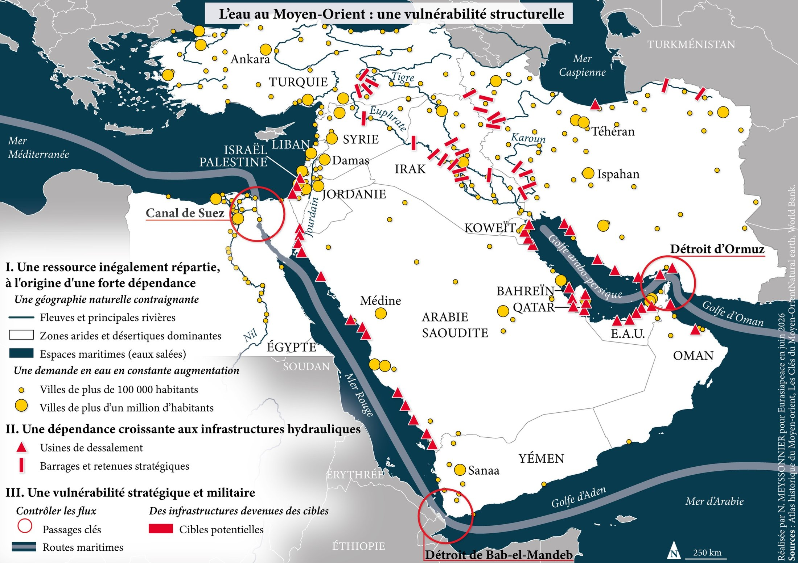

Water in the Middle East: a structural vulnerability
Map produced for the annual review of the Eurasiapeace think tank.
As one of the world’s driest regions, the Middle East regards water as a resource that is both vital and strategic. The sharing of major transboundary river basins (the Tigris, Euphrates, Jordan and Nile) pits upstream states, which control the flow through their dams, against downstream states, which depend on it. Driven by climate change and demographic pressure, this water stress is becoming a factor in vulnerability and rivalries, which this map seeks to analyse.